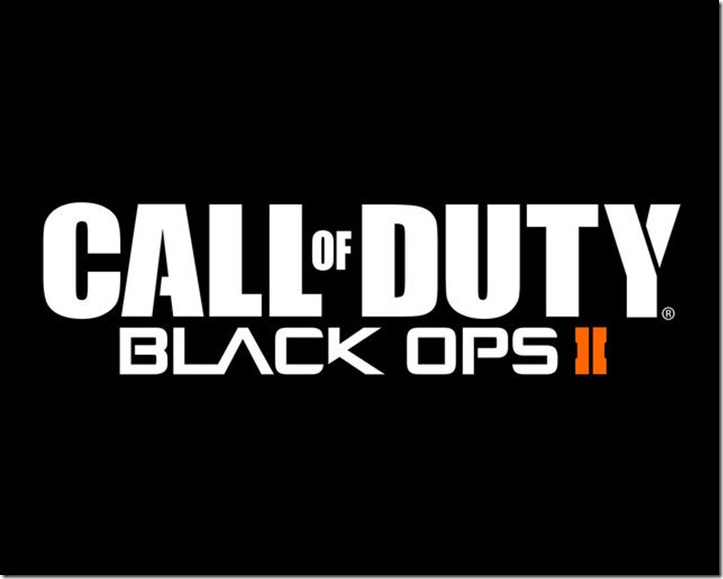
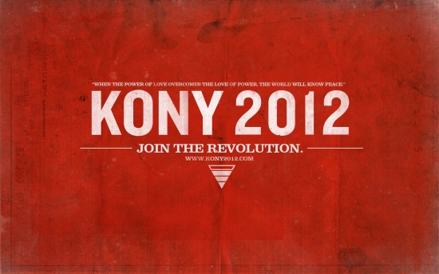

Technological Predictions - 10 Years from Now - Top 3By: Skylar Pagniello
First, I would love if instead of video game controllers it was just a room where you could do all sorts of actions in the games. Second, waterproof smartphones would be really nice because smartphones are not cheap and need to be more durable. The third thing I would want in the future would be touch projections from phones or computers.
Posted on : 05/14/2012
Significant BookBy: Skylar Pagniello
in the year 2007 (5 years ago) the Harry Potter series was finished by J. K. Rowling. The final book was called Harry Potter and The Deathly Hallows. It was the seventh book in the awesome series. The movie for The Deathly Hallows was released in 2011 (last year). It took two movies to cover all the action and left everybody in suspense.
Posted on : 05/12/2012
Significant FilmBy: Skylar Pagniello
avatar is my favorite movie from the last 5 years. It's a movie about humans on an alien planet trying to get a rare, expensive metal. Avatar turns into the best love story thats not super chick like. It turns out that they transfer the humans into their Avatars and they live happily ever after.
Posted on : 05/11/2012
Significant SongBy: Skylar Pagniello
my favorite song that I heard yesterday (5/10/12) and is now my favorite song is "The Churn of the Century - By: Bassnectar." It's a dubstep song that starts out like an old-timey record song with trumpets and turns into a dubstep beat down. Then in the middle of the song it combines both sounds to bring the old and new generation of music together. Just when you think it's over it's not.
Posted on : 05/09/2012
Pop Culture Items - 2012By: Skylar Pagniello


Posted on : 05/08/2012
Favorite QuoteBy: Skylar Pagniello
dubstep will be the reason the world ends in 2012 because the drop will be so massive, Earth won't be able to handle it.
Posted on : 05/05/2012